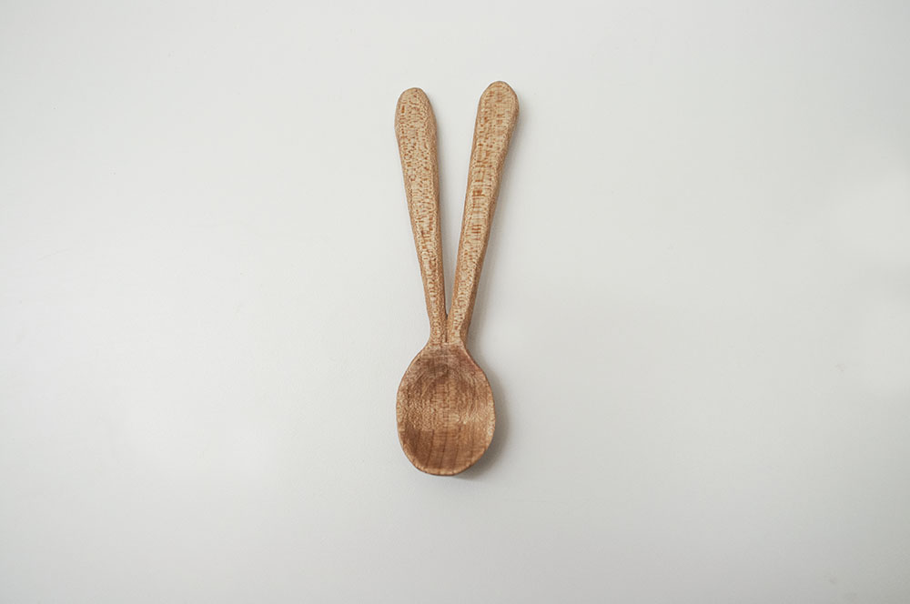
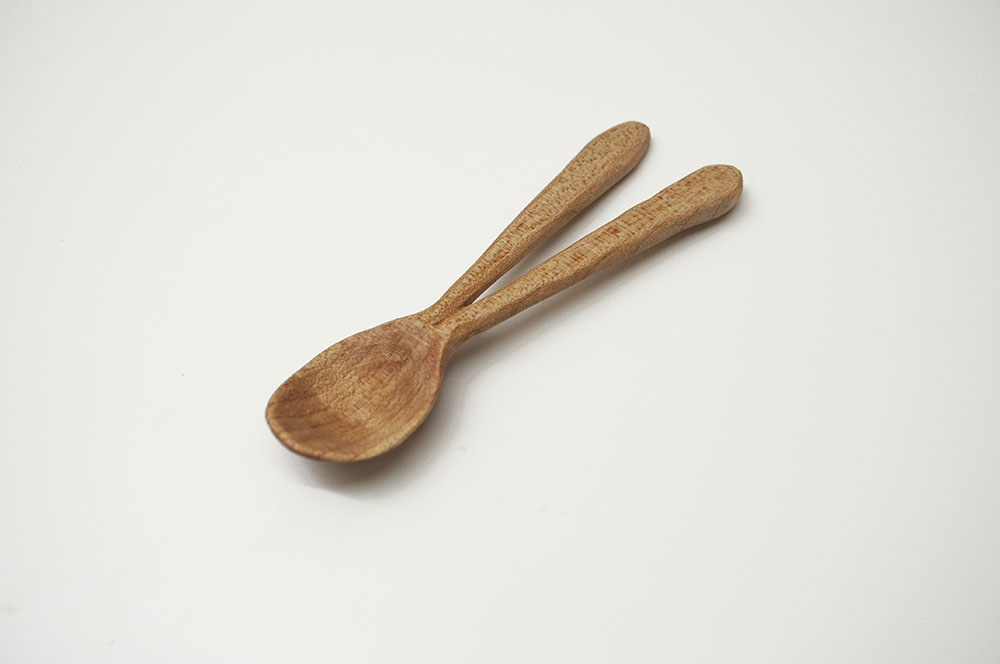

In my practice, I always want to collaborate with my materials. I don’t want to manipulate my materials, for I do not want to force them to be what they are not meant to be.
In life, I’m also always in constant state of collaboration. As someone who lives with bipolar disorder, I have to collaborate with my illness to live a “normal” life. It’s like a dance, careful steps back and forth, side to side, it can be tiring after a while, but it's what I have to do.
I want to create an embodiment and an experience of having to do this collaboration in simplest everyday life events like having a meal. Vlusser mentioned that “gestures are to be considered movements of the body and, in broader sense, movements of tools attached to the body.” So I made a video of people sharing A Spoon For Two to have a meal together. What kind of gestures will people make while they dance for a meal together?
I think everybody had fun collaborating.